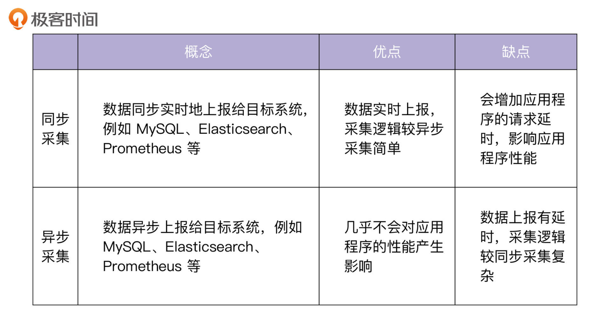
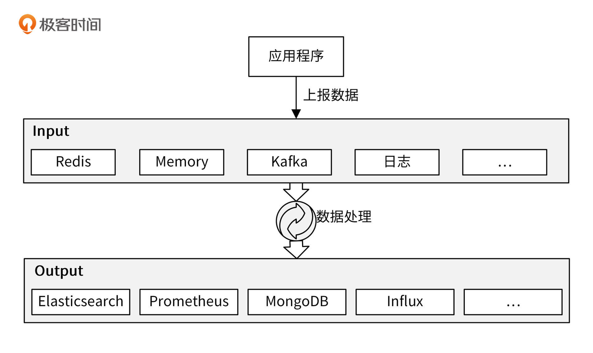
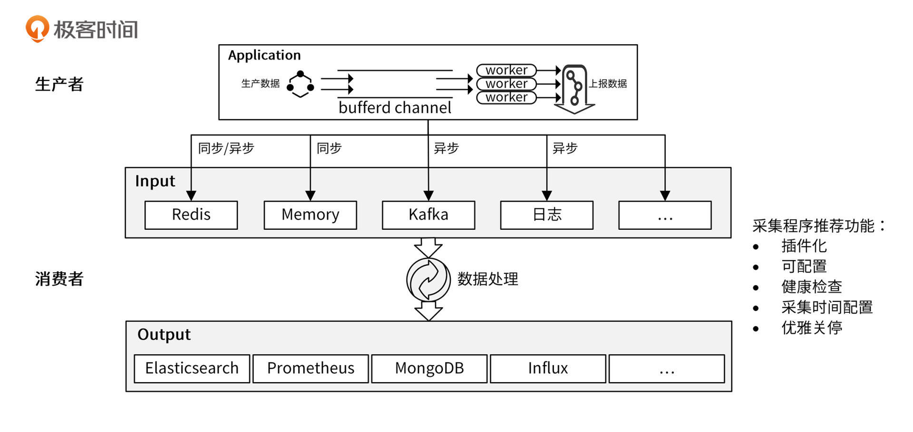
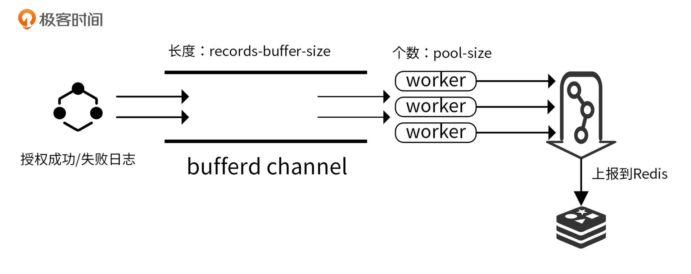
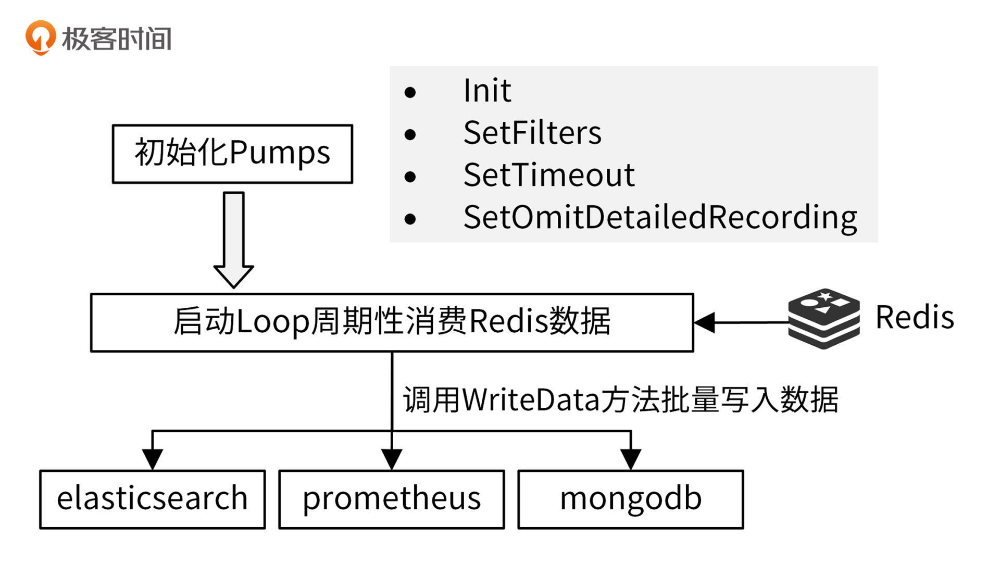

- 00 开篇词 从 0 开始搭建一个企业级 Go 应用.md.html
- 01 IAM系统概述：我们要实现什么样的 Go 项目？.md.html
- 02 环境准备：如何安装和配置一个基本的 Go 开发环境？.md.html
- 03 项目部署：如何快速部署 IAM 系统？.md.html
- 04 规范设计（上）：项目开发杂乱无章，如何规范？.md.html
- 05 规范设计（下）：commit 信息风格迥异、难以阅读，如何规范？.md.html
- 06 目录结构设计：如何组织一个可维护、可扩展的代码目录？.md.html
- 07 工作流设计：如何设计合理的多人开发模式？.md.html
- 08 研发流程设计（上）：如何设计 Go 项目的开发流程？.md.html
- 09 研发流程设计（下）：如何管理应用的生命周期？.md.html
- 10 设计方法：怎么写出优雅的 Go 项目？.md.html
- 11 设计模式：Go常用设计模式概述.md.html
- 12 API 风格（上）：如何设计RESTful API？.md.html
- 13 API 风格（下）：RPC API介绍.md.html
- 14 项目管理：如何编写高质量的Makefile？.md.html
- 15 研发流程实战：IAM项目是如何进行研发流程管理的？.md.html
- 16 代码检查：如何进行静态代码检查？.md.html
- 17 API 文档：如何生成 Swagger API 文档 ？.md.html
- 18 错误处理（上）：如何设计一套科学的错误码？.md.html
- 19 错误处理（下）：如何设计错误包？.md.html
- 20 日志处理（上）：如何设计日志包并记录日志？.md.html
- 21 日志处理（下）：手把手教你从 0 编写一个日志包.md.html
- 22 应用构建三剑客：Pflag、Viper、Cobra 核心功能介绍.md.html
- 23 应用构建实战：如何构建一个优秀的企业应用框架？.md.html
- 24 Web 服务：Web 服务核心功能有哪些，如何实现？.md.html
- 25 认证机制：应用程序如何进行访问认证？.md.html
- 26 IAM项目是如何设计和实现访问认证功能的？.md.html
- 27 权限模型：5大权限模型是如何进行资源授权的？.md.html
- 28 控制流（上）：通过iam-apiserver设计，看Web服务的构建.md.html
- 29 控制流（下）：iam-apiserver服务核心功能实现讲解.md.html
- 30 ORM：CURD 神器 GORM 包介绍及实战.md.html
- 31 数据流：通过iam-authz-server设计，看数据流服务的设计.md.html
- 32 数据处理：如何高效处理应用程序产生的数据？.md.html
- 33 SDK 设计（上）：如何设计出一个优秀的 Go SDK？.md.html
- 34 SDK 设计（下）：IAM项目Go SDK设计和实现.md.html
- 35 效率神器：如何设计和实现一个命令行客户端工具？.md.html
- 36 代码测试（上）：如何编写 Go 语言单元测试和性能测试用例？.md.html
- 37 代码测试（下）：Go 语言其他测试类型及 IAM 测试介绍.md.html
- 38 性能分析（上）：如何分析 Go 语言代码的性能？.md.html
- 39 性能分析（下）：API Server性能测试和调优实战.md.html
- 40 软件部署实战（上）：部署方案及负载均衡、高可用组件介绍.md.html
- 41 软件部署实战（中）：IAM 系统生产环境部署实战.md.html
- 42 软件部署实战（下）：IAM系统安全加固、水平扩缩容实战.md.html
- 43 技术演进（上）：虚拟化技术演进之路.md.html
- 44 技术演进（下）：软件架构和应用生命周期技术演进之路.md.html
- 45 基于Kubernetes的云原生架构设计.md.html
- 46 如何制作Docker镜像？.md.html
- 47 如何编写Kubernetes资源定义文件？.md.html
- 48 IAM 容器化部署实战.md.html
- 49 服务编排（上）：Helm服务编排基础知识.md.html
- 50 服务编排（下）：基于Helm的服务编排部署实战.md.html
- 51 基于 GitHub Actions 的 CI 实战.md.html
- 特别放送 Go Modules依赖包管理全讲.md.html
- 特别放送 Go Modules实战.md.html
- 特别放送 IAM排障指南.md.html
- 特别放送 分布式作业系统设计和实现.md.html
- 特别放送 给你一份Go项目中最常用的Makefile核心语法.md.html
- 特别放送 给你一份清晰、可直接套用的Go编码规范.md.html
- 直播加餐 如何从小白进阶成 Go 语言专家？.md.html
- 结束语 如何让自己的 Go 研发之路走得更远？.md.html
- 捐赠
32 数据处理：如何高效处理应用程序产生的数据？
你好，我是孔令飞。今天我们来聊聊，如何更好地进行异步数据处理。
一个大型应用为了后期的排障、运营等，会将一些请求数据保存在存储系统中，供日后使用。例如：应用将请求日志保存到 Elasticsearch 中，方便排障；网关将 API 请求次数、请求消息体等数据保存在数据库中，供控制台查询展示。
为了满足这些需求，我们需要进行数据采集，数据采集在大型应用中很常见，但我发现不少开发者设计的数据采集服务，通常会存在下面这些问题：
- 采集服务只针对某个采集需求开发，如果采集需求有变，需要修改主代码逻辑，代码改动势必会带来潜在的 Bug，增加开发测试工作量。
- 数据采集服务会导致已有的服务请求延时变高。
- 采集数据性能差，需要较长时间才能采集完一批数据。
- 启停服务时，会导致采集的数据丢失。
这一讲，我就来详细教你如何设计和落地一个数据采集服务，解决上面这些问题。
数据采集方式的分类
首先，你需要知道当前数据采集有哪些方式，以便更好地理解异步数据处理方案。
目前，数据采集主要有两种方式，分别是同步采集和异步采集。二者的概念和优缺点如下表所示：

现代应用对性能的要求越来越高，而异步采集对应用程序的性能影响更小，因此异步采集更受开发者欢迎，得到了大规模的应用。接下来，我要介绍的 IAM Pump Server 服务，采用的就是异步采集的方式。
数据采集系统设计
这一讲，我采用理论+实战的方式来展示如何设计一个数据采集服务，这里先来介绍下关于数据采集的理论知识，后面会有具体的实战案例。
在过往的项目开发中，我发现很多开发人员添加了数据采集功能后，因为同步上报数据、单线程、上报逻辑不对等原因，让整个应用程序的性能受到了严重影响。那么，如何在采集过程中不影响程序的性能？
答案就是让数据采集模型化。通过模型化，可以使设计出来的采集系统功能更加通用，能够满足未来的很多同类需求，我们也就不需要重复开发相同的系统了。
我今天就来给你详细介绍下，如何将数据采集功能模型化，以及该模型是如何解决上面说的的各种问题的。
设计数据采集系统时需要解决的核心问题
采集系统首先需要一个数据源 Input，Input 可以是一个或者多个，Input 中的数据来自于应用程序上报。采集后的数据通常需要经过处理，比如格式化、增删字段、过滤无用的数据等，然后将处理后的数据存储到下游系统（Output）中，如下图所示：

这里，我们需要解决这 3 个核心问题：
- 进行数据采集，就需要在正常流程中多加一个上报数据环节，这势必会影响程序的性能。那么，如何让程序的性能损失最小化？
- 如果 Input 产生数据的速度大于 Output 的消费能力，产生数据堆积怎么办？
- 数据采集后需要存储到下游系统。在存储之前，我们需要对数据进行不同的处理，并可能会存储到不同的下游系统，这种可变的需求如何满足？
对于让程序性能损失最小化这一点，最好的方法是异步上报。如果是异步，我们需要先把数据缓存在内存中，然后再异步上报到目标系统中。当然，为了提高上报的效率，可以采用批量上报的方式。
对于数据堆积这个问题，比较好的解决方法是，将采集的数据先上报到一些具有高吞吐量、可以存储大量数据的中间组件，比如 Kafka、Redis 中。这种方式也是业界标准的处理方式。
对于采集需求多样化这个问题，我们可以将采集程序做成插件化、可扩展的，满足可变的需求。
要解决这 3 个问题，其实就涉及到了数据采集系统中的两个功能点的设计，它们分别是数据上报功能和数据采集功能。接下来我们就来看下，如何设计这两个功能点。
数据上报功能设计
为了提高异步上报的吞吐量，你可以将数据缓存在内存中（Go 中可以使用有缓冲 channel），并使用多个 worker 去消费内存中的数据。使用多个 worker ，可以充分发挥 CPU 的多核能力。另外，上报给下游系统时，你也可以采用批量上报的方式。
数据采集功能设计
现代应用程序越来越讲究插件化、扩展性，在设计采集系统时，也应该考虑到未来的需求。比如，未来你可能需要将数据从上报到 MongoDB 切换到 HBase 中，或者同时将数据上报到 MongoDB 和 HBase 中。因此，上报给下游的程序逻辑要具有插件化的能力，并能通过配置选择需要的插件。
为了提高程序性能，会先把数据缓存在内存中。但是这样有个缺点：在关停程序时，内存中的数据就会丢失。所以，在程序结束之前，我们需要确保内存中的数据能够上报成功，也就是说采集程序需要实现优雅关停功能。优雅关停不仅要确保缓存中的数据被成功上报，还要确保正在处理的数据被成功上报。
当然了，既然是数据采集，还要能够配置采集的频率。最后，因为采集程序通常是非 API 类型的，所以还需要对外暴露一个特殊的 API，用来返回采集程序的健康状态。
数据采集应用模型
通过上面的分析和设计，可以绘制出下面这个采集模型：

异步上报需要额外的异步逻辑，会增加开发工作量和程序复杂度，所以，对于一些 Input 数据生产速度小于 Output 消费速度，并且 Output 具有高吞吐量、低延时特性的场景，也可以采用同步上报，例如同步上报给 Redis。
数据采集系统落地项目：iam-authz-server + iam-pump
上面，我介绍了数据采集系统的架构，但是只有模型和理论，肯定还不足以解决你对数据采集程序的开发需求。所以，接下来我来介绍下如何落地上面的数据采集架构。整个架构包括两个部分，分别由不同的服务实现：
- iam-authz-server：实现数据上报功能。
- iam-pump：实现数据采集功能。
整个采集系统的架构，跟上面描述的数据采集架构完全一致，这里就不重复说明了。
iam-authz-server：数据上报
数据上报的最大难点，就是如何减少上报逻辑对应用性能的影响。对此，我们主要的解决思路就是异步上报数据。
接下来我会介绍 iam-authz-server 的数据上报设计。这是一个非常成熟的设计，在我所开发和了解的项目中被大量采用，有些项目可以承载十亿级/天的请求量。通过介绍这个设计，我们来看看异步上报的具体方法，以及上报过程中要考虑的因素。
iam-authz-server 的数据上报架构如下图所示：

iam-authz-server 服务中的数据上报功能可以选择性开启，开启代码见 internal/authzserver/server.go ，代码如下：
if s.analyticsOptions.Enable {
analyticsStore := storage.RedisCluster{KeyPrefix: RedisKeyPrefix}
analyticsIns := analytics.NewAnalytics(s.analyticsOptions, &analyticsStore)
analyticsIns.Start()
s.gs.AddShutdownCallback(shutdown.ShutdownFunc(func(string) error {
analyticsIns.Stop()
return nil
}))
}
上面的代码中，当 s.analyticsOptions.Enable 为 true 时，开启数据上报功能。因为数据上报会影响程序的性能，而且在未来可能会存在禁掉数据上报功能的场景，所以在设计 iam-authz-server 时，就把数据上报功能做成了可配置的，也就是说可以通过配置文件来启用/禁用数据上报功能。配置方式也很简单：将 iam-authz-server.yaml 的 analytics.enable 设置为 true，代表开启数据上报功能；设置为 false ，则代表关闭数据上报功能。
这里，我建议你在设计程序时，将未来的可能变量考虑进去，并将这些变量做成可配置的。这样，如果哪天需求变化，我们就能通过修改配置文件，而不是修改代码的方式来满足需求。这种方式可以将应用程序的变动局限在配置文件中，从而大大减小现网服务出现故障的概率，做到只变更配置文件就可以缩短发布变更的周期。
在上面的代码中，通过 NewAnalytics 创建一个数据上报服务，代码如下：
func NewAnalytics(options *AnalyticsOptions, store storage.AnalyticsHandler) *Analytics {
ps := options.PoolSize
recordsBufferSize := options.RecordsBufferSize
workerBufferSize := recordsBufferSize / uint64(ps)
log.Debug("Analytics pool worker buffer size", log.Uint64("workerBufferSize", workerBufferSize))
recordsChan := make(chan *AnalyticsRecord, recordsBufferSize)
return &Analytics{
store: store,
poolSize: ps,
recordsChan: recordsChan,
workerBufferSize: workerBufferSize,
recordsBufferFlushInterval: options.FlushInterval,
}
}
这里的代码根据传入的参数，创建 Analytics 类型的变量并返回，变量中有 5 个字段需要你关注：
- store： storage.AnalyticsHandler 接口类型，提供了
Connect() bool和AppendToSetPipelined(string, byte)函数，分别用来连接 storage 和上报数据给 storage。iam-authz-server 用了 redis storage。 - recordsChan：授权日志会缓存在 recordsChan 带缓冲 channel 中，其长度可以通过 iam-authz-server.yaml 配置文件中的
analytics.records-buffer-size配置。 - poolSize：指定开启 worker 的个数，也就是开启多少个 Go 协程来消费 recordsChan 中的消息。
- workerBufferSize：批量投递给下游系统的的消息数。通过批量投递，可以进一步提高消费能力、减少 CPU 消耗。
- recordsBufferFlushInterval：设置最迟多久投递一次，也就是投递数据的超时时间。
analytics.ecords-buffer-size 和 analytics.pool-size 建议根据部署机器的 CPU 和内存来配置。在应用真正上线前，我建议你通过压力和负载测试，来配置一个合适的值。
Analytics提供了 3 种方法：
- Start()，用来启动数据上报服务。
- Stop()，用来关停数据上报服务。主程序在收到系统的终止命令后，调用 Stop 方法优雅关停数据上报服务，确保缓存中的数据都上报成功。
- RecordHit(record *AnalyticsRecord) error，用来记录 AnalyticsRecord 的数据。
通过 NewXxx （NewAnalytics）返回一个 Xxx （Analytics）类型的结构体，Xxx（Analytics） 类型带有一些方法，如下：
func NewAnalytics(options) *Analytics {
...
}
func (r *Analytics) Start() {
...
}
func (r *Analytics) Stop() {
...
}
func (r *Analytics) RecordHit(record *AnalyticsRecord) error {
...
}
其实，上述代码段是一种常见的 Go 代码编写方式/设计模式。你在以后的开发生涯中，会经常遇到这种设计方式。使用上述代码设计方式有下面两个好处。
- 功能模块化：将数据上报的功能封装成一个服务模块，数据和方法都围绕着 Xxx 结构体来展开。这和 C++、Java、Python 的类有相似的地方，你可以这么理解：Xxx 相当于类，NewXxx 相当于初始化一个类实例，Start、Stop、RecordHit 是这个类提供的方法。功能模块化可以使程序逻辑更加清晰，功能更独立、更好维护，也可以供其他应用使用。
- 方便数据传递：可以将数据存放在 Xxx 结构体字段中，供不同的方法共享使用，如果有并发，数据共享时，注意要给非并发安全的类型加锁，例如recordsChan。
接下来，我会介绍 iam-authz-server 服务中跟数据上报相关的 3 部分核心代码，分别是启动数据上报服务、异步上报授权日志和优雅关停数据上报。
启动服务：启动数据上报服务
在服务启动时，首先要启动数据上报功能模块。我们通过调用 analyticsIns.Start() 启动数据上报服务。Start 代码如下：
func (r *Analytics) Start() {
analytics = r
r.store.Connect()
// start worker pool
atomic.SwapUint32(&r.shouldStop, 0)
for i := 0; i < r.poolSize; i++ {
r.poolWg.Add(1)
go r.recordWorker()
}
// stop analytics workers
go r.Stop()
}
这里有一点需要你注意，数据上报和数据采集都大量应用了 Go 协程来并发地执行操作，为了防止潜在的并发读写引起的Bug，建议你的测试程序编译时加上 -race，例如go build -race cmd/iam-authz-server/authzserver.go。然后，在测试过程中，观察程序日志，看有无并发问题出现。
Start 中会开启 poolSize 个数的 worker 协程，这些协程共同消费 recordsChan 中的消息，消费逻辑见 recordWorker() ，代码如下：
func (r *Analytics) recordWorker() {
defer r.poolWg.Done()
// this is buffer to send one pipelined command to redis
// use r.recordsBufferSize as cap to reduce slice re-allocations
recordsBuffer := make([][]byte, 0, r.workerBufferSize)
// read records from channel and process
lastSentTS := time.Now()
for {
readyToSend := false
select {
case record, ok := <-r.recordsChan:
// check if channel was closed and it is time to exit from worker
if !ok {
// send what is left in buffer
r.store.AppendToSetPipelined(analyticsKeyName, recordsBuffer)
return
}
// we have new record - prepare it and add to buffer
if encoded, err := msgpack.Marshal(record); err != nil {
log.Errorf("Error encoding analytics data: %s", err.Error())
} else {
recordsBuffer = append(recordsBuffer, encoded)
}
// identify that buffer is ready to be sent
readyToSend = uint64(len(recordsBuffer)) == r.workerBufferSize
case <-time.After(r.recordsBufferFlushInterval):
// nothing was received for that period of time
// anyways send whatever we have, don't hold data too long in buffer
readyToSend = true
}
// send data to Redis and reset buffer
if len(recordsBuffer) > 0 && (readyToSend || time.Since(lastSentTS) >= recordsBufferForcedFlushInterval) {
r.store.AppendToSetPipelined(analyticsKeyName, recordsBuffer)
recordsBuffer = recordsBuffer[:0]
lastSentTS = time.Now()
}
}
}
recordWorker 函数会将接收到的授权日志保存在 recordsBuffer 切片中，当数组内元素个数为 workerBufferSize ，或者距离上一次投递时间间隔为 recordsBufferFlushInterval 时，就会将 recordsBuffer 数组中的数据上报给目标系统（Input）。- recordWorker()中有些设计技巧，很值得你参考。
- 使用 msgpack 序列化消息：msgpack 是一个高效的二进制序列化格式。它像 JSON 一样，让你可以在各种语言之间交换数据。但是它比 JSON 更快、更小。
- 支持 Batch Windows：当 worker 的消息数达到指定阈值时，会批量投递消息给 Redis，阈值判断代码为
readyToSend = uint64(len(recordsBuffer)) == r.workerBufferSize。 - 超时投递：为了避免因为产生消息太慢，一直达不到 Batch Windows，无法投递消息这种情况，投递逻辑也支持超时投递，通过
case <-time.After(r.recordsBufferFlushInterval)代码段实现。 - 支持优雅关停：当 recordsChan 关闭时，将 recordsBuffer 中的消息批量投递给 Redis，之后退出 worker 协程。
这里有个注意事项：投递完成后，你需要重置 recordsBuffer 和计时器，否则会重复投递数据：
recordsBuffer = recordsBuffer[:0]
lastSentTS = time.Now()
这里还设置了一个最大的超时时间 recordsBufferForcedFlushInterval，确保消息最迟被投递的时间间隔。也就是说， iam-authz-server 强制要求最大投递间隔为 recordsBufferForcedFlushInterval 秒，这是为了防止配置文件将 recordsBufferFlushInterval 设得过大。
运行服务：异步上报授权日志
开启了数据上报服务后，当有授权日志产生时，程序就会自动上报数据。接下来，我会详细介绍下如何高效上报数据。
iam-authz-server 会在授权成功时调用 LogGrantedAccessRequest 函数，在授权失败时调用 LogRejectedAccessRequest 函数。并且，在这两个函数中，调用 RecordHit 函数，记录授权日志。
iam-authz-server 通过调用 RecordHit(record *AnalyticsRecord) error 函数，异步缓存授权日志。调用 RecordHit 后，会将 AnalyticsRecord 类型的消息存放到 recordsChan 有缓冲 channel 中。
这里要注意：在缓存前，需要判断上报服务是否在优雅关停中，如果在关停中，则丢弃该消息：
if atomic.LoadUint32(&r.shouldStop) > 0 {
return nil
}
通过将授权日志缓写入 recordsChan 有缓冲 channel 中，LogGrantedAccessRequest 和 LogRejectedAccessRequest 函数可以不用等待授权日志上报成功就返回，这样就使得整个授权请求的性能损耗几乎为零。
关停服务：优雅关停数据上报
完成数据上报之后的下一步，就是要优雅地将数据上报关停。为了确保在应用关停时，缓存中的数据和正在投递中的数据都能够投递到 Redis，iam-authz-server 实现了数据上报关停功能，代码如下：
gs.AddShutdownCallback(shutdown.ShutdownFunc(func(string) error {
analyticsIns.Stop()
return nil
}))
当收到 os.Interrupt 和 syscall.SIGTERM 系统信号后，调用 analyticsIns.Stop()函数，关停数据上报服务， Stop 函数会停止接收新的授权日志，并等待正在上报的数据上报完成。
上面我介绍了数据上报部分的功能设计，接下来，我来介绍下数据采集部分的功能设计。
iam-pump：数据采集
iam-authz-server 将数据上报到 Redis，iam-pump 消费 Redis 中的数据，并保存在 MongoDB 中做持久化存储。
iam-pump 的设计要点是：插件化、可配置地将 Redis 中的数据处理后存储到下游系统中，并且实现优雅关停功能，这些也是设计数据采集程序的要点和难点所在。下面，我们就来看下 iam-pump 是如何插件化地实现一个数据采集程序的。这个数据采集程序的设计思路，在我开发的大型企业应用中有实际的落地验证，你可以放心使用。
iam-pump 数据采集架构如下图所示：

在iam-pump服务启动时，要启动数据采集功能，启动代码见 internal/pump/server.go。
接下来，我会介绍下 iam-pump 服务中的 5 部分核心代码：
- 数据采集插件定义。
- 初始化数据采集插件。
- 健康检查。
- 启动 Loop 周期性消费 Redis 数据。
- 优雅关停数据采集服务。
初始化服务：数据采集插件定义
数据采集组件设计的核心是插件化，这里我将需要上报的系统抽象成一个个的 pump，那么如何定义 pump 接口呢？接口定义需要参考实际的采集需求，通常来说，至少需要下面这几个函数。
- New：创建一个 pump。
- Init：初始化一个 pump，例如，可以在 Init 中创建下游系统的网络连接。
- WriteData：往下游系统写入数据。为了提高性能，最好支持批量写入。
- SetFilters：设置是否过滤某条数据，这也是一个非常常见的需求，因为不是所有的数据都是需要的。
- SetTimeout：设置超时时间。我就在开发过程中遇到过一个坑，连接 Kafka 超时，导致整个采集程序超时。所以这里需要有超时处理，通过超时处理，可以保证整个采集框架正常运行。
我之前开发过公有云的网关服务，网关服务需要把网关的请求数据转存到 MongoDB 中。我们的网关服务曾经遇到一个比较大的坑：有些用户会通过网关上传非常大的文件（百 M 级别），这些数据转存到 MongoDB 中，快速消耗了 MongoDB 的存储空间（500G 存储空间）。为了避免这个问题，在转存数据时，需要过滤掉一些比较详细的数据，所以 iam-pump 添加了 SetOmitDetailedRecording 来过滤掉详细的数据。
所以，最后 iam-pump 的插件接口定义为 internal/pump/pumps/pump.go ：
type Pump interface {
GetName() string
New() Pump
Init(interface{}) error
WriteData(context.Context, []interface{}) error
SetFilters(analytics.AnalyticsFilters)
GetFilters() analytics.AnalyticsFilters
SetTimeout(timeout int)
GetTimeout() int
SetOmitDetailedRecording(bool)
GetOmitDetailedRecording() bool
}
你在实际开发中，如果有更多的需求，可以在 Pump interface 定义中继续添加需要的处理函数。
初始化服务：初始化数据采集插件
定义好插件之后，需要初始化插件。在 initialize 函数中初始化 pumps：
func (s *pumpServer) initialize() {
pmps = make([]pumps.Pump, len(s.pumps))
i := 0
for key, pmp := range s.pumps {
pumpTypeName := pmp.Type
if pumpTypeName == "" {
pumpTypeName = key
}
pmpType, err := pumps.GetPumpByName(pumpTypeName)
if err != nil {
log.Errorf("Pump load error (skipping): %s", err.Error())
} else {
pmpIns := pmpType.New()
initErr := pmpIns.Init(pmp.Meta)
if initErr != nil {
log.Errorf("Pump init error (skipping): %s", initErr.Error())
} else {
log.Infof("Init Pump: %s", pmpIns.GetName())
pmpIns.SetFilters(pmp.Filters)
pmpIns.SetTimeout(pmp.Timeout)
pmpIns.SetOmitDetailedRecording(pmp.OmitDetailedRecording)
pmps[i] = pmpIns
}
}
i++
}
}
initialize 会创建、初始化，并调用 SetFilters、SetTimeout、SetOmitDetailedRecording 来设置这些 pump。Filters、Timeout、OmitDetailedRecording 等信息在 pump 的配置文件中指定。
这里有个技巧你也可以注意下：pump 配置文件支持通用的配置，也支持自定义的配置，配置结构为 PumpConfig ：
type PumpConfig struct {
Type string
Filters analytics.AnalyticsFilters
Timeout int
OmitDetailedRecording bool
Meta map[string]interface{}
}
pump 自定义的配置可以存放在 map 类型的变量 Meta 中。通用配置可以使配置共享，减少开发和维护工作量，自定义配置可以适配不同pump的差异化配置。
初始化服务：健康检查
因为 iam-pump 是一个非 API 服务，为了监控其运行状态，这里也设置了一个健康检查接口。iam-pump 组件通过调用 server.ServeHealthCheck 函数启动一个 HTTP 服务，ServeHealthCheck 函数代码如下：
func ServeHealthCheck(healthPath string, healthAddress string) {
http.HandleFunc("/"+healthPath, func(w http.ResponseWriter, r *http.Request) {
w.Header().Set("Content-type", "application/json")
w.WriteHeader(http.StatusOK)
_, _ = w.Write([]byte(`{"status": "ok"}`))
})
if err := http.ListenAndServe(healthAddress, nil); err != nil {
log.Fatalf("Error serving health check endpoint: %s", err.Error())
}
}
该函数启动了一个 HTTP 服务，服务监听地址通过 health-check-address 配置，健康检查路径通过 health-check-path 配置。如果请求 http://<health-check-address>/<health-check-path>返回{"status": "ok"}，说明 iam-pump 可以正常工作。
这里的健康检查只是简单返回了一个字符串，实际开发中，可以封装更复杂的逻辑。比如，检查进程是否可以成功 ping 通数据库，进程内的工作进程是否处于 worker 状态等。
iam-pump 默认的健康检查请求地址为http://127.0.0.1:7070/healthz 。
运行服务：启动 Loop 周期性消费 Redis 数据
初始化 pumps 之后，就可以通过 Run 函数启动消费逻辑了。在 Run 函数中，会定期（通过配置 purge-delay 设置轮训时间）从 Redis 中获取所有数据，经过 msgpack.Unmarshal 解压后，传给 writeToPumps 处理：
func (s preparedPumpServer) Run(stopCh <-chan struct{}) error {
ticker := time.NewTicker(time.Duration(s.secInterval) * time.Second)
defer ticker.Stop()
for {
select {
case <-ticker.C:
analyticsValues := s.analyticsStore.GetAndDeleteSet(storage.AnalyticsKeyName)
if len(analyticsValues) > 0 {
// Convert to something clean
keys := make([]interface{}, len(analyticsValues))
for i, v := range analyticsValues {
decoded := analytics.AnalyticsRecord{}
err := msgpack.Unmarshal([]byte(v.(string)), &decoded)
log.Debugf("Decoded Record: %v", decoded)
if err != nil {
log.Errorf("Couldn't unmarshal analytics data: %s", err.Error())
} else {
if s.omitDetails {
decoded.Policies = ""
decoded.Deciders = ""
}
keys[i] = interface{}(decoded)
}
}
// Send to pumps
writeToPumps(keys, s.secInterval)
}
// exit consumption cycle when receive SIGINT and SIGTERM signal
case <-stopCh:
log.Info("stop purge loop")
return nil
}
}
}
writeToPumps 函数通过调用 execPumpWriting 函数，异步调用 pump 的 WriteData 函数写入数据。execPumpWriting 函数中有一些设计技巧，你可以注意下这两个：
- 将一些通用的处理，例如 Filters、Timeout、OmitDetailedRecording 放在 pump 之外处理，这样可以减少 pump 中代码的重复性。
- 优雅关停。通过如下代码实现优雅关停功能：
select {
case <-stopCh:
log.Info("stop purge loop")
return
default:
}
上面的代码需要放在 writeToPumps 之后，这样可以确保所有数据都成功写入 pumps 之后，再停止采集逻辑。
关停服务：优雅关停数据采集服务
在关停服务时，为了确保正在处理的数据被成功存储，还需要提供优雅关停功能。iam-pump 通过 channel 传递 SIGINT 和 SIGTERM 信号，当消费逻辑收到这两个信号后，会退出消费循环，见 Run 函数。代码如下：
func (s preparedPumpServer) Run(stopCh <-chan struct{}) error {
ticker := time.NewTicker(time.Duration(s.secInterval) * time.Second)
defer ticker.Stop()
for {
select {
case <-ticker.C:
// 消费逻辑
...
// exit consumption cycle when receive SIGINT and SIGTERM signal
case <-stopCh:
log.Info("stop purge loop")
return nil
}
}
}
总结
这一讲，我主要介绍了如何将数据采集需求转化成一个数据采集模型，并从这个模型出发，设计出一个可扩展、高性能的数据采集服务，并通过 iam-pump 组件来落地该采集模型。
最后，我还想给你一个建议：在开发中，你也可以将一些功能抽象成一些通用的模型，并为该模型实现基本框架（引擎），然后将一些需要定制化的部分插件化。通过这种方式，可以设计出一个高扩展的服务，使得服务不仅能够满足现在的需求，还能够满足未来的需求。
课后练习
- 思考下，如何设计一个数据上报和数据采集应用，设计时有哪些点需要注意？
- 动手练习下，启动 iam-authz-server 和 iam-pump 服务，验证整个流程。
欢迎你在留言区与我交流讨论，我们下一讲见。
© 2019 - 2023 Liangliang Lee. Powered by gin and hexo-theme-book.